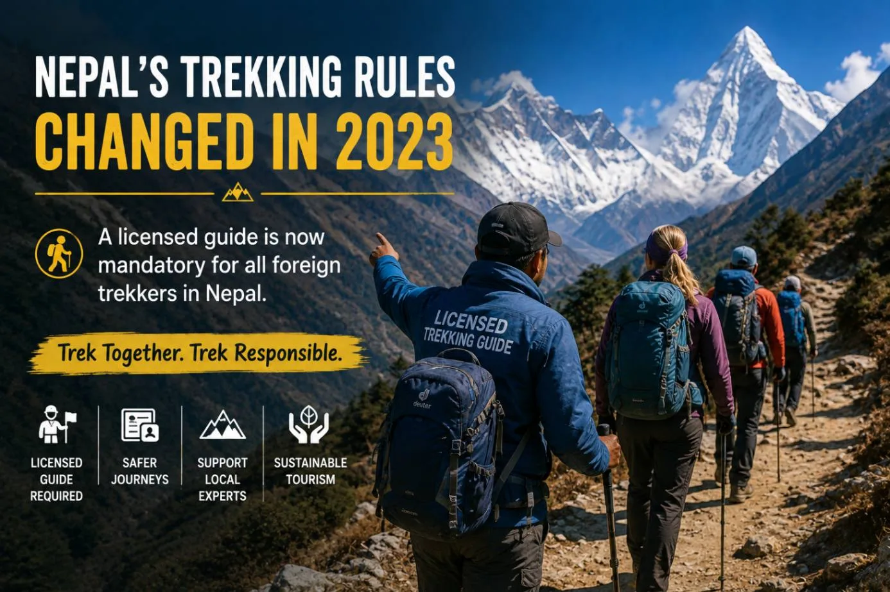
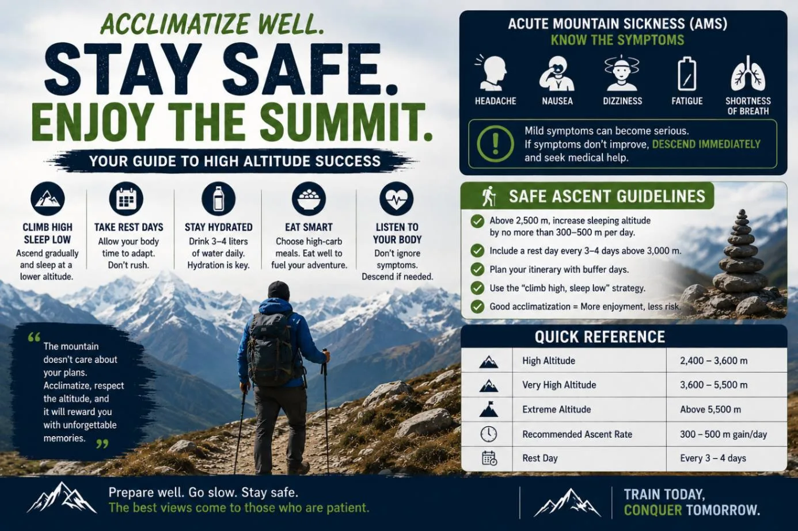
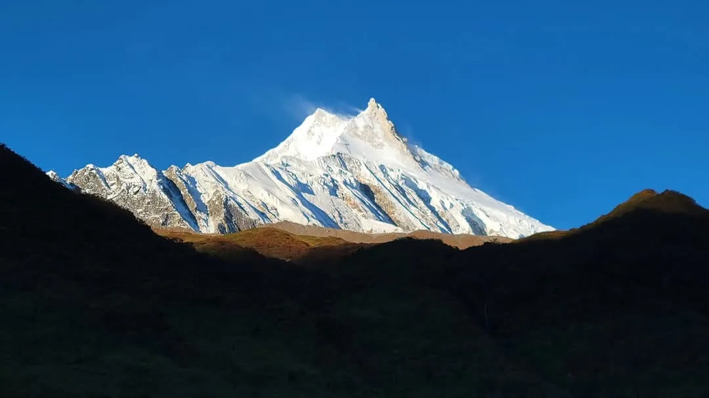

1. The Nepal Trekking Reality: Why Choosing the Right Company Is Critical
Trekking in the Himalayas is a life-changing adventure, but it is not a casual walk in a city park. Whether you are aiming for Everest Base Camp (5,364m), crossing Thorong La Pass (5,416m), or traversing remote valleys like Manaslu, you will spend weeks in rugged alpine environments where atmospheric oxygen drops by 50%, mountain weather shifts violently, and vehicular road access does not exist.
In Kathmandu and Pokhara alone, there are over 2,000 officially registered trekking agencies, alongside hundreds of unlicensed freelancers and middlemen. The quality of these operators spans a massive spectrum:
- World-Class Ethical Operators: Run by experienced Sherpas and mountain leaders who invest in certified wilderness medical training, carry modern satellite and altitude equipment, enforce strict porter protection guidelines, and maintain dedicated 24/7 rescue coordinators.
- Budget "Chhapro" Operators: One-room shopfronts in tourist hubs that compete purely on rock-bottom prices. To offer unrealistic "$600 Everest treks", they cut essential corners: hiring uncertified teenaged guides, refusing to insure porters, forcing porters to carry 35–45kg loads, serving substandard food, and abandoning clients during mountain flight delays.
Choosing the right trekking agency is not merely a question of convenience—it determines your physical safety, your ethical footprint in the Himalayas, and whether your dream trek becomes a triumphant memory or an expensive nightmare.
2. Legal Verification Checklist: Mandatory Nepal Government Accreditations
Before transferring any deposit or signing a contract, you must verify that your prospective company is fully licensed and legally registered with the relevant government bodies in Nepal. Operating an unregistered travel agency is illegal under Nepali law and leaves you completely unprotected by local courts or tourism rescue mechanisms.
A legitimate trekking agency must hold active, verifiable registrations with these six statutory institutions:
| Statutory Body | Abbreviation | Role & Purpose | How Travelers Can Verify |
|---|---|---|---|
| Department of Tourism / MoCTCA | DoT | Issues official operating licenses for mountaineering, trekking, and adventure operations. | Check company website for 4-digit DoT license number; verify on official DoT portal. |
| Office of the Company Registrar | OCR | Ministry of Industry body that incorporates the agency as a legal business entity. | Verify official Registration Certificate number and physical registered office address. |
| Trekking Agencies Association of Nepal | TAAN | Apex national trade association regulating trail safety, environmental norms, and fair labor. | Look for the active TAAN Member logo and check the official TAAN member directory online. |
| Nepal Rastra Bank | NRB | Central bank authorization allowing the company to legally accept foreign currency payments. | Ensure invoice specifies an NRB-authorized corporate bank account, not a personal account. |
| Inland Revenue Department | IRD / PAN / VAT | Tax registration certificate ensuring compliance with Nepali corporate and VAT tax codes. | Verify valid 9-digit PAN (Permanent Account Number) on official company invoices. |
| Nepal Mountaineering Association | NMA | Regulates trekking peak climbing permits (e.g., Island Peak, Mera Peak, Lobuche, Yala Peak). | Mandatory if your itinerary involves climbing any of Nepal's 27 designated trekking peaks. |
Any reputable trekking agency will proudly publish its legal registration numbers on its website's "About Us" or "Legal Documents" page. If an operator cannot produce a valid Department of Tourism license and TAAN membership certificate within 5 minutes of asking, walk away immediately.
3. Direct Local Operator vs. International Agency vs. Third-Party Platform
When planning your Himalayan trek from abroad, you will encounter three distinct business models. Understanding how these models operate reveals why booking direct with a registered local operator delivers the best balance of safety, cost, and authentic impact:
1. International Western Agencies (UK, USA, Australia)
- How They Operate: Large commercial travel brands advertise heavily in Western markets. However, they almost never operate logistics directly in Nepal—they subcontract your entire trek to a local Nepali agency.
- Pricing: Very expensive ($2,500 – $4,500+ for standard Everest Base Camp). They add a 50% to 100% middleman markup to cover overseas offices, marketing, and profit margins.
- Pros & Cons: Familiar consumer protection in your home country; but slow communication and very little of your payment reaches the local Sherpas doing the actual work.
2. Online Aggregators (Viator, GetYourGuide, TourRadar)
- How They Operate: Giant online booking engines that list thousands of tours from various vendors.
- Pricing: Moderate, but take a 20% to 25% commission cut directly from the local operator.
- Pros & Cons: Convenient credit card checkout; but you have zero direct communication with your mountain guide prior to arrival, and customer service staff have never set foot on a Himalayan trail.
3. Direct Licensed Local Nepali Agencies (e.g., Igloo Himalaya Treks)
- How They Operate: 100% locally owned and operated in Kathmandu. You communicate directly with certified expedition leaders and trip coordinators from your very first email inquiry.
- Pricing: Fair, honest, and transparent ($1,200 – $1,650 for classic teahouse routes). Zero middleman fees.
- Community Impact: 100% of your money remains in Nepal, directly funding fair porter wages, local teahouse families, mountain conservation, and guides' children's education.
- Flexibility: Unmatched ability to customize dates, modify routes on the fly, adjust to weather delays, and upgrade services instantly.
4. Guide Qualifications: Licensing, Wilderness First Aid & Language Standards

Your guide is the single most important individual on your trek. They are your navigator, cultural interpreter, logistical coordinator, and first-line medical responder. Unfortunately, some budget operators cut costs by sending inexperienced "porter-guides" without formal government training.
When evaluating a trekking company, demand proof of these three non-negotiable guide qualifications:
- Government License from NATHM: All legitimate professional guides must complete rigorous academic and practical training through the Nepal Academy of Tourism and Hotel Management (NATHM) under the Ministry of Tourism. They carry a photo ID license card issued by the Department of Tourism with an annual renewal stamp.
- Wilderness First Aid (WFR / AWFA) Certification: Medical emergencies at 5,000 meters require specialized training. Your guide should hold current certification in Wilderness First Aid, including cardiopulmonary resuscitation (CPR), fracture stabilization, and acute altitude sickness management.
- Pulse Oximeter Literacy & Altitude Protocols: A qualified guide must carry a medical-grade pulse oximeter and know how to interpret oxygen saturation levels (SpO2) and resting heart rates alongside the Lake Louise Consensus AMS Scoring System.
- English Fluency & Cultural Heritage: Clear, confident English communication is essential during medical assessments and route briefings. Guides belonging to indigenous mountain communities (Sherpa, Tamang, Gurung, Rai) offer deep insights into Buddhist monasteries, local customs, and mountain folklore.
5. Ethical Porter Welfare: Fair Wages, Weight Limits & IPPG Standards

Mountain porters are the unsung heroes of Himalayan trekking. They carry heavy duffels across freezing mountain passes so that foreign travelers can hike with light daypacks. Yet, in the budget sector, porters are frequently exploited: underpaid, forced to carry dangerous 35–45kg loads, denied warm clothing, and made to sleep in unheated shed corridors.
A company's treatment of its porters is the ultimate moral litmus test of its integrity. Legitimate operators adhere strictly to the International Porter Protection Group (IPPG) 5 Core Guidelines:
| IPPG Welfare Pillar | Standard Enforced by Reputable Agencies | Budget Operator Reality |
|---|---|---|
| 1. Maximum Weight Cap | Strict 20kg to 25kg maximum load per porter (shared between two clients). | Overloaded to 35kg – 45kg to save paying an extra porter wage. |
| 2. Fair Living Wage | Guaranteed daily living wage exceeding government minimums (NPR 2,200 – 2,800/day). | Substandard pay (NPR 1,200 – 1,500/day) relying entirely on client tips. |
| 3. Medical & Rescue Insurance | Mandatory comprehensive policy covering medical care and emergency helicopter evacuation. | Uninsured; porters abandoned if injured or sick in high camps. |
| 4. Protective Alpine Gear | Adequate footwear, warm windproof jackets, thermal base layers, gloves, and UV sunglasses. | Porters hiking in cheap sneakers, light jeans, and cotton hoodies across snow passes. |
| 5. Food & Shelter Equality | Nutritious warm meals and designated bed accommodations inside teahouses. | Expected to survive on scraps and sleep in open dining rooms or kitchens. |
At Igloo Himalaya Treks, porter welfare is non-negotiable. Every porter on our expeditions is fully insured, provided with professional alpine apparel, given equal teahouse lodging, and strictly limited to a 20kg maximum duffel payload.
6. Mountain Safety Protocols, High-Altitude Monitoring & PAC Bags

Acute Mountain Sickness (AMS), High Altitude Pulmonary Edema (HAPE), and High Altitude Cerebral Edema (HACE) are real physiological risks above 3,500 meters. The best trekking companies replace guesswork with rigorous medical protocols:
Twice-Daily Health Logs
Your guide should perform mandatory health checkups every morning and evening, logging your blood oxygen saturation (SpO2) and resting heart rate. Tracking saturation trends over multiple days allows guides to detect acclimatization lag 24 to 48 hours before physical symptoms escalate.
Comprehensive Expedition First Aid
A professional team carries a fully stocked expedition medical kit containing altitude medications (Diamox, Dexamethasone, Nifedipine), broad-spectrum antibiotics, oral rehydration salts, anti-emetics, blister care supplies, splints, and pulse oximeters.
Emergency Hyperbaric Equipment (High Passes & Remote Wilderness)
On high-risk expeditions crossing passes over 5,300 meters (such as Cho La, Thorong La, Larkya La, or Sherpani Col), leading operators carry supplemental medical oxygen cylinders with masks and regulators, or a portable hyperbaric chamber (PAC bag). When an incapacitated hiker cannot descend immediately, a PAC bag can artificially simulate a 1,500m descent within minutes, saving lives during severe storms.
7. Emergency Helicopter Evacuation Readiness: What Separates Good Operators
In the event of severe altitude sickness, acute trauma, or sudden illness in the high Himalayas, helicopter evacuation is often the only viable rescue method. However, arranging a helicopter in remote Nepal is logistically complex:
- Direct Air Charter Access: Reputable companies have direct 24/7 contracts with established helicopter charter operators in Kathmandu (such as Simrik Air, Altitude Air, Kailash Helicopter, and Heli Everest). They do not waste hours routing calls through third-party brokers.
- Satellite & Mobile Communications: Mountain leaders carry satellite phones or Garmin inReach devices in valleys with dead cellular zones, guaranteeing immediate distress calls to the Kathmandu operations desk.
- Insurance Coordination Without Cash Extortion: In 2018, the Nepal government investigated fraudulent budget operators who extorted upfront cash from sick tourists or called unnecessary helicopters to collect insurance kickbacks. Reputable agencies coordinate directly with your international travel insurer (Allianz, World Nomads, Global Rescue, Ripcord) to authorize guarantee of payment (GOP) seamlessly, eliminating out-of-pocket extortion.
Always ensure your personal travel insurance policy explicitly covers hiking and trekking up to 6,000 meters with emergency helicopter evacuation. Standard travel insurance policies typically cap medical evacuation at 3,000 meters.
9. Review Authenticity: How to Spot Fake Testimonials vs. Genuine Trekker Feedback
Online reviews on platforms like TripAdvisor, Google Maps, and Trustpilot are essential tools for vetting companies, but they must be scrutinized with a critical eye. Astroturfing (purchasing fake 5-star reviews or paying friends to post reviews) is an unfortunate reality in the Thamel tourism scene.
Use these proven criteria to separate authentic traveler reviews from fabricated marketing:
Red Flags of Fake Reviews
- Review Clumping: 25 five-star reviews posted within the span of 3 or 4 days, followed by months of silence.
- Single-Review Profiles: Reviewer accounts with generic Western names that have only ever posted exactly one review on the entire platform.
- Vague, Over-the-Top Praise: "Best company in Nepal! Very nice trip! Everything good!" with zero specifics about the route, teahouses, or weather.
- No Negative Responses: A company with 500 reviews that has never encountered a weather delay or a flight cancellation is statistically improbable.
Green Flags of Authentic Reviews
- Specific Staff Names Mentioned: Reviews repeatedly praise specific guides and porters by name (e.g., "Kamal Tamang", "Ang Tshering") across multiple years.
- Detailed Trail Nuances: Reviewers describe specific situations: how the agency re-routed them during a Lukla flight delay, assisted with altitude headaches, or accommodated dietary needs.
- Verified Photos & Videos: Travelers upload genuine, unedited smartphone photos showing themselves with the guides and company banners on the trail.
10. Private Tailored Itineraries vs. Fixed Group Departures
When choosing an operator, consider whether you prefer joining a scheduled group departure or booking a private custom itinerary:
- Group Joining Departures: Great for solo travelers looking to make friends and split costs. However, large group tours (12 to 16 hikers) carry major drawbacks: the pace is dictated by the slowest or fastest walker, meal orders at crowded teahouses take hours, and private room requests are rarely possible. If you join a group, insist on a maximum group size cap of 8 to 10 trekkers with at least one assistant guide for every 4 hikers.
- Private Custom Itineraries: Booking a private trek with your partner, family, or personal circle gives you total control over the daily pace. You choose your departure dates, decide when to stop for tea, can add acclimatization days without consulting strangers, and enjoy guaranteed private teahouse rooms. Reputable local agencies like Igloo Himalaya Treks offer private departures at virtually the same price per person as commercial group tours.
11. Environmental Stewardship & Eco-Friendly Trekking Practices
Himalayan ecosystems are fragile. Hundreds of thousands of plastic water bottles and food wrappers are discarded along trail corridors every season. The best trekking companies demonstrate genuine commitment to sustainable, responsible tourism:
- Eliminating Single-Use Plastics: Responsible agencies prohibit the purchase of disposable plastic water bottles. Instead, they provide or encourage safe water purification methods (SteriPEN UV purifiers, LifeStraws, or chlorine dioxide droplets) and recommend filling reusable metal flasks with boiled water from teahouses.
- Leave No Trace (LNT) Ethics: Guides and porters are trained to pack out all non-biodegradable waste, particularly on wilderness camping routes like Kanchenjunga, Upper Dolpo, and Makalu Base Camp.
- Supporting Clean Energy & Local Micro-Economies: Ethical agencies prioritize teahouses that utilize solar energy and clean cookstoves, patronize women-led community lodges, and ensure local village farmers supply fresh ingredients.
12. Pre-Trip Communication & 24/7 Ground Support Responsiveness
How a company communicates before you hand over your deposit is an accurate preview of how they will treat you when challenges arise in the mountains:
Apply the "24-Hour Inquiry Test": Send an initial email asking three specific technical questions regarding your planned trek (e.g., asking about acclimatization rest schedules, porter insurance policy, and how they handle dietary restrictions like vegetarian or gluten-free).
- The Red Flag Response: You receive an impersonal automated reply, or a sales agent replies 4 days later with a generic brochure without addressing your questions.
- The Reputable Response: Within 12 to 24 hours, you receive a thoughtful, comprehensive reply written by an experienced trekking director who addresses each question thoroughly and offers practical, realistic advice.
A top-tier operator provides comprehensive pre-trip support, including an itemized packing checklist, visa application guidance, physical conditioning recommendations, and a personal pre-trek briefing meeting in Kathmandu before departure.
13. Deposit Security, Payment Gateways & Fair Cancellation Protections
Financial security is a critical consideration when booking an overseas expedition months in advance:
Secure Payment Channels
- Authorized Corporate Bank Wire: The bank account details provided on the invoice must be in the company's registered legal name (e.g., "Igloo Himalaya Treks & Expedition Pvt. Ltd.") and held at a major commercial bank cleared by the Nepal Rastra Bank.
- Secure Online Credit Card Gateways: Look for 3D-Secure online payment links (Visa/Mastercard) integrated through reputable banking portals (e.g., Himalayan Bank or Nabil Bank).
- Never send money via Western Union, MoneyGram, or personal bank accounts.
Fair Cancellation & Rescheduling Terms
- Reasonable Advance Deposit: Standard deposits range from 15% to 25% of the total trip cost to secure domestic flights and national park permits.
- Flexible Postponement: High-altitude mountain weather is unpredictable. Leading companies offer lifetime deposit validity, allowing you to postpone your trip dates without forfeiture if personal emergencies or flight cancellations occur.
14. 10 Critical Questions to Ask an Agency Before Booking
Before transferring any deposit, copy and paste this 10-question checklist into an email to your prospective trekking agency. A professional operator will answer every question transparently:
| # | Question to Ask the Agency | Acceptable "Green Flag" Answer |
|---|---|---|
| 1 | Are you officially licensed with DoT and an active TAAN member? | Yes, provides verifiable registration numbers and link to DoT/TAAN directory. |
| 2 | Will our guide be a government-licensed professional with WFR training? | Yes, NATHM certified with current Wilderness First Responder credentials. |
| 3 | What is your guide-to-client ratio and group size limit? | 1 guide per 4–5 clients; maximum group size capped at 8–10 with assistant guides. |
| 4 | What medical and altitude safety gear does our team carry? | Pulse oximeter (twice daily logs), comprehensive first aid kit, oxygen/PAC access. |
| 5 | What is your policy on porter insurance, weight limits, and wages? | Strict 20–25kg limit, full medical/rescue insurance, fair wages, warm clothing provided. |
| 6 | Are all domestic flights, national park permits, and taxes included? | Yes, fully itemized in writing with zero hidden surcharge at trailhead. |
| 7 | How do you coordinate emergency helicopter rescues? | Direct 24/7 satellite dispatch; direct GOP coordination with global insurance desk. |
| 8 | What is your contingency plan if mountain flights (e.g., Lukla) are delayed? | Structured contingency buffer days; overland alternative route coordination. |
| 9 | How do you accept deposits and what is your postponement policy? | Official bank wire / secure card portal; lifetime deposit rollover on postponements. |
| 10 | Can you connect me with recent clients or share recent verified photos? | Readily provides references, detailed recent reviews, and pre-departure contact. |
15. Red Flags & Warning Signs: When to Walk Away Immediately

If you encounter any of these five critical red flags during your research or in-person interactions in Kathmandu or Pokhara, walk away immediately:
1. "Cash-Only" Hotel Lobby Deals
Touts who approach you at the airport, taxi stands, or hotel lobbies offering to organize a trek "cheaply for cash" without a registered physical office are almost always unlicensed middlemen.
2. Skips Essential Acclimatization Days
Any agency proposing a 10-day Everest Base Camp trek or skipping acclimatization rest days at Namche Bazaar and Dingboche is prioritizing profit over your life.
3. Vague or Missing Inclusions
If a quote fails to explicitly state whether teahouse meals, hot showers, drinking water, or domestic airfare are included, expect massive hidden add-on bills on the trail.
4. Refuses to Discuss Porter Welfare
Agencies that deflect questions about porter insurance or brag about porters carrying 40kg loads are unethical and violate basic human rights standards.
Frequently Asked Questions (FAQ) About Choosing a Trekking Operator
Select a category below to explore expert answers to the most common questions travelers ask about Choose the Best Trekking Company:
General & Planning

Ready to Experience the Himalayas?
Whether you are preparing for high-altitude trekking, cultural circuits, or alpine summit expeditions, start planning a bespoke journey tailored to your fitness, travel season, and style.